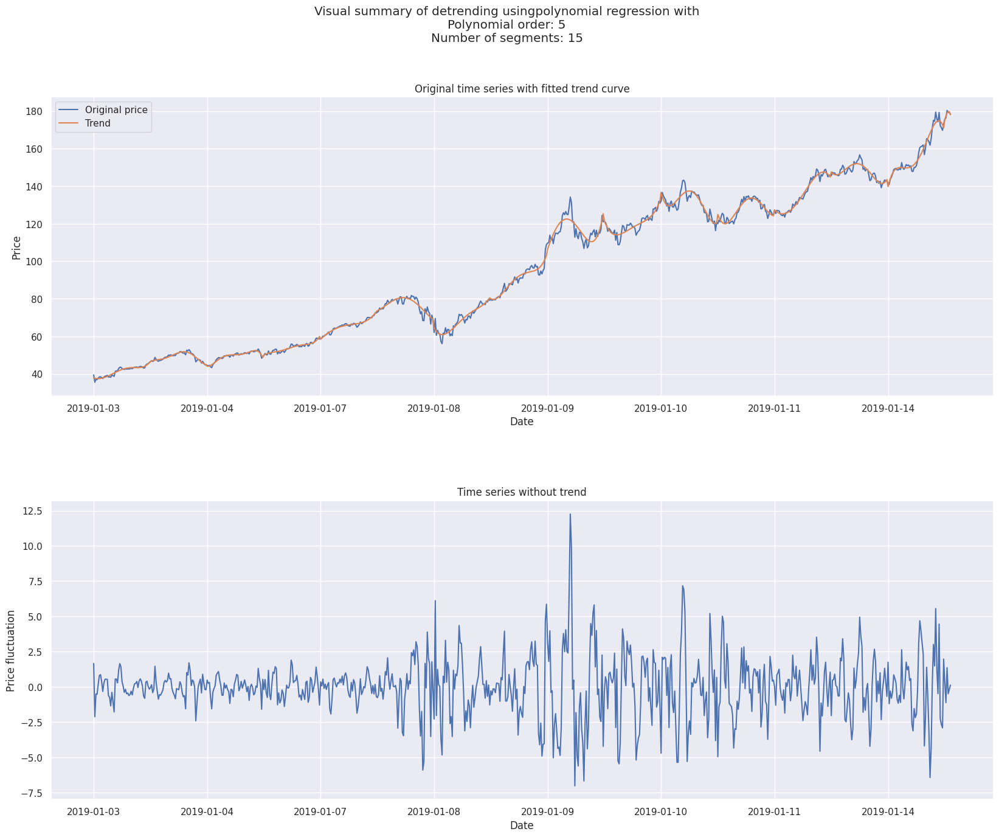
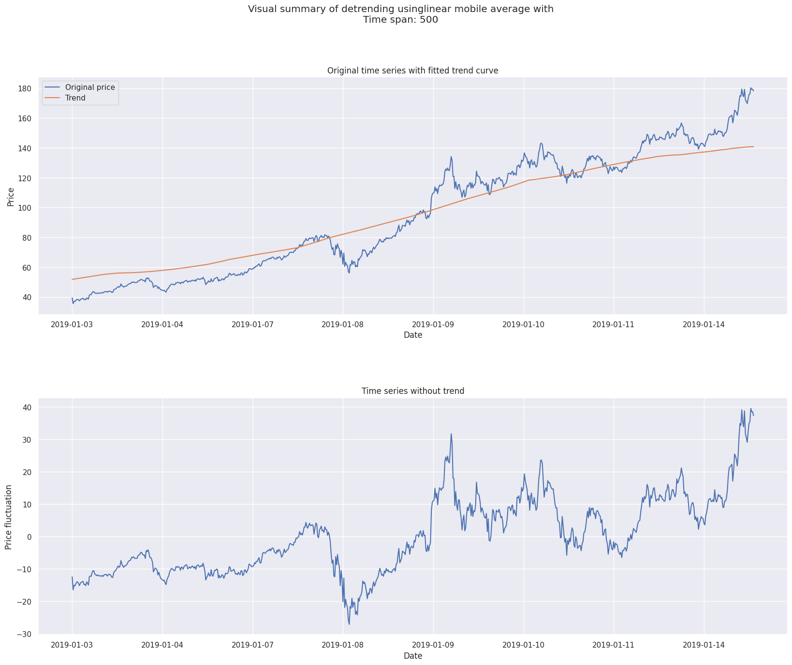
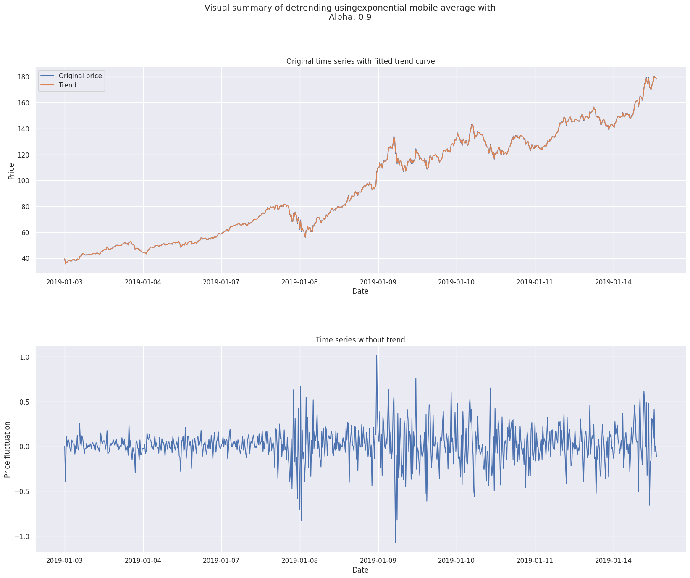
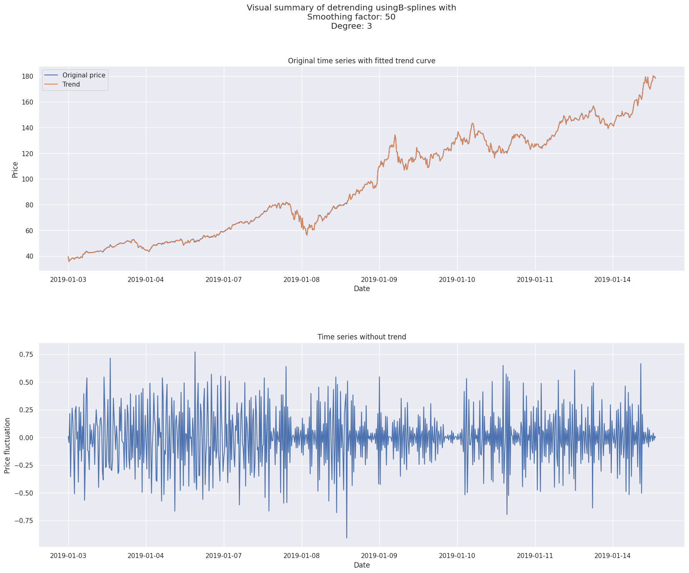

How to use detrend classes#
1import pandas as pd
2
3from src.functions.detrend import (
4 BSplinesDetrend,
5 ExponentialMADetrend,
6 LinearMADetrend,
7 LinearRegressionDetrend,
8 PolynomialRegressionDetrend,
9)
10from src.utils import init_notebook
1init_notebook()
1# Lecture des données
2data_folder = "data/raw_data/"
3stock_name = "AAPL"
4df = pd.read_csv(
5 f"{data_folder}/{stock_name}.csv", parse_dates=["Date"], index_col="Date"
6)
7y = df["Close"]
1models = [
2 LinearRegressionDetrend(),
3 PolynomialRegressionDetrend(order=5, n_segments=15),
4 LinearMADetrend(window=500),
5 ExponentialMADetrend(alpha=0.9),
6 BSplinesDetrend(smoothing_factor=50, degree=3),
7]
1for detrend_model in models:
2 y_fitted = detrend_model.fit(y)
3 y_detrend = detrend_model.predict(y)
4 detrend_model.fancy_plot(xticklabels=df.index.strftime("%Y-%m-%d"))
/home/runner/work/stock-analysis/stock-analysis/src/functions/detrend_fancy_plot.py:43: UserWarning: set_ticklabels() should only be used with a fixed number of ticks, i.e. after set_ticks() or using a FixedLocator.
axs[0].set_xticklabels(xticklabels)
/home/runner/work/stock-analysis/stock-analysis/src/functions/detrend_fancy_plot.py:51: UserWarning: set_ticklabels() should only be used with a fixed number of ticks, i.e. after set_ticks() or using a FixedLocator.
axs[1].set_xticklabels(xticklabels)
/home/runner/work/stock-analysis/stock-analysis/src/functions/detrend_fancy_plot.py:43: UserWarning: set_ticklabels() should only be used with a fixed number of ticks, i.e. after set_ticks() or using a FixedLocator.
axs[0].set_xticklabels(xticklabels)
/home/runner/work/stock-analysis/stock-analysis/src/functions/detrend_fancy_plot.py:51: UserWarning: set_ticklabels() should only be used with a fixed number of ticks, i.e. after set_ticks() or using a FixedLocator.
axs[1].set_xticklabels(xticklabels)
/home/runner/work/stock-analysis/stock-analysis/src/functions/detrend_fancy_plot.py:43: UserWarning: set_ticklabels() should only be used with a fixed number of ticks, i.e. after set_ticks() or using a FixedLocator.
axs[0].set_xticklabels(xticklabels)
/home/runner/work/stock-analysis/stock-analysis/src/functions/detrend_fancy_plot.py:51: UserWarning: set_ticklabels() should only be used with a fixed number of ticks, i.e. after set_ticks() or using a FixedLocator.
axs[1].set_xticklabels(xticklabels)
/home/runner/work/stock-analysis/stock-analysis/src/functions/detrend_fancy_plot.py:43: UserWarning: set_ticklabels() should only be used with a fixed number of ticks, i.e. after set_ticks() or using a FixedLocator.
axs[0].set_xticklabels(xticklabels)
/home/runner/work/stock-analysis/stock-analysis/src/functions/detrend_fancy_plot.py:51: UserWarning: set_ticklabels() should only be used with a fixed number of ticks, i.e. after set_ticks() or using a FixedLocator.
axs[1].set_xticklabels(xticklabels)
/home/runner/work/stock-analysis/stock-analysis/src/functions/detrend_fancy_plot.py:43: UserWarning: set_ticklabels() should only be used with a fixed number of ticks, i.e. after set_ticks() or using a FixedLocator.
axs[0].set_xticklabels(xticklabels)
/home/runner/work/stock-analysis/stock-analysis/src/functions/detrend_fancy_plot.py:51: UserWarning: set_ticklabels() should only be used with a fixed number of ticks, i.e. after set_ticks() or using a FixedLocator.
axs[1].set_xticklabels(xticklabels)




